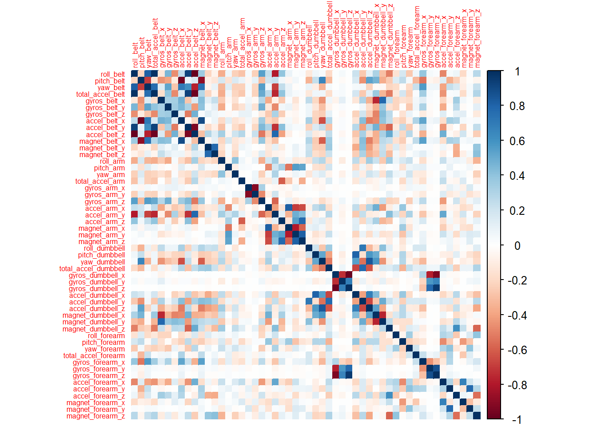
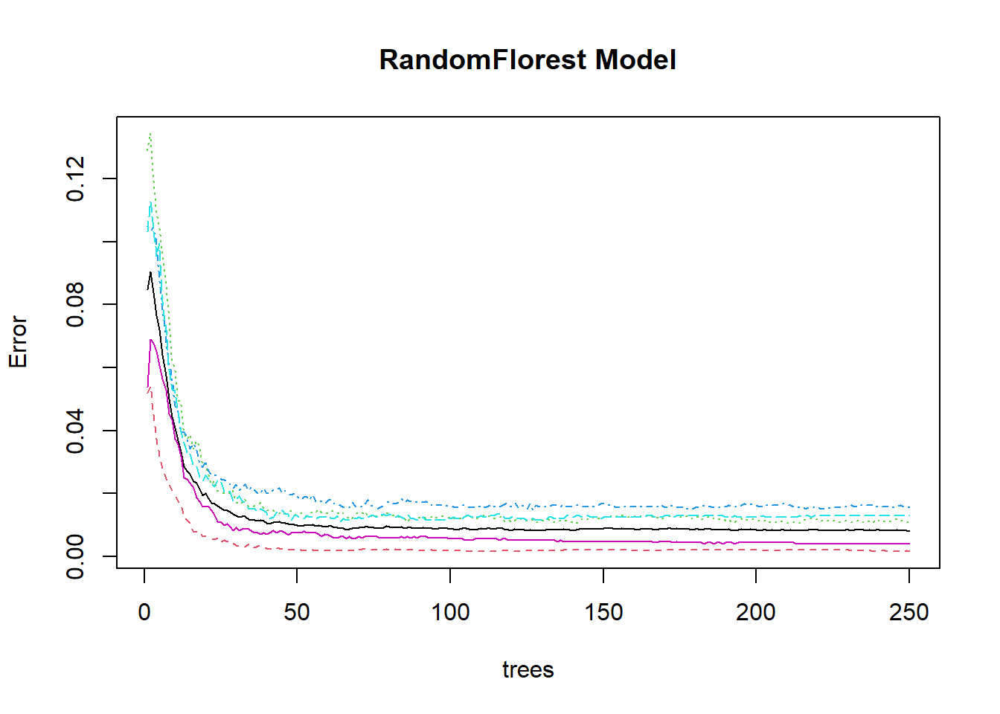

In this project we will predict if one exercise was made correctly or not. Six participants were asked to perform one set of 10 repetitions of the Unilateral Dumbbell Biceps Curl in five different fashions. One of them represents the exercise done correctly (Class A) and the others had mistakes. The dataset comes from http://groupware.les.inf.puc-rio.br/har and represents data from accelerometers on the belt, forearm, arm, and dumbell.
# Load csv
pml.train <- read.csv('pml-training.csv')
pml.validate <- read.csv('pml-testing.csv')
# Remove columns with missing values
pml.train <- pml.train[, colSums(is.na(pml.train)) == 0]
pml.train <- pml.train[, colSums(pml.train == "") == 0]
pml.validate <- pml.validate[, colSums(is.na(pml.validate)) == 0]
pml.validate <- pml.validate[, colSums(pml.validate == "") == 0]
# Remove the first 7 columns, as they do not have impact in the outcome
pml.train <- pml.train[, -1:-7]
pml.validate <- pml.validate[, -1:-7]Here we will split the training data into 70% train and 30% test data.
set.seed(1234) # set the seed to always get the same results
library(caret)
library(randomForest)
library(corrplot)inTrain <- createDataPartition(pml.train$classe, p = 0.7, list = FALSE)
train <- pml.train[inTrain, ]
test <- pml.train[-inTrain, ]Now we will evaluate the correlation within the variables.
cor_matrix <- cor(train[, -53])
corrplot(cor_matrix, method = "color", tl.cex = 0.5)
We can see there are a few variables that are highly correlated. We should remove them to reduce pair-wise correlations, as they have little information to add in the model and it will reduce computational time to fit it. We will use a cutoff value of 0.8. The removed columns are shown below.
highlyCorrelated = findCorrelation(cor_matrix, cutoff=0.8)
removed_columns <- colnames(train)[highlyCorrelated]
train <- train[, -highlyCorrelated]
test <- test[, -highlyCorrelated]
pml.validate <- pml.validate[, -highlyCorrelated]
removed_columns## [1] "accel_belt_z" "roll_belt" "accel_belt_y" "accel_dumbbell_z"
## [5] "accel_belt_x" "pitch_belt" "accel_dumbbell_x" "accel_arm_x"
## [9] "magnet_arm_y" "gyros_forearm_y" "gyros_dumbbell_x" "gyros_dumbbell_z"
## [13] "gyros_arm_x"Next we will fit a RandomForest model to predict the classes, using 5-fold-cross-validation when applying the algorithm. I previously also tested a boosted trees (“gbm”) and linear discriminant analysis (“lda”) models, but I had better accuracy with RandomForest. I also achieved best results using 250 trees (the default 500 showed no significant increase in accuracy).
controlRF <- trainControl(method="cv", number=5, verboseIter=FALSE)
modRF <- train(classe ~ ., data=train, method="rf", trControl=controlRF, ntree=250)Now we can evaluate the model by looking at Accuracy and confusion matrix.
pred <- predict(modRF, test)
conf_matrix <- confusionMatrix(pred, factor(test$classe))
conf_matrix## Confusion Matrix and Statistics
##
## Reference
## Prediction A B C D E
## A 1672 4 0 0 0
## B 1 1126 11 0 0
## C 1 9 1012 10 1
## D 0 0 3 952 0
## E 0 0 0 2 1081
##
## Overall Statistics
##
## Accuracy : 0.9929
## 95% CI : (0.9904, 0.9949)
## No Information Rate : 0.2845
## P-Value [Acc > NIR] : < 2.2e-16
##
## Kappa : 0.991
##
## Mcnemar's Test P-Value : NA
##
## Statistics by Class:
##
## Class: A Class: B Class: C Class: D Class: E
## Sensitivity 0.9988 0.9886 0.9864 0.9876 0.9991
## Specificity 0.9991 0.9975 0.9957 0.9994 0.9996
## Pos Pred Value 0.9976 0.9895 0.9797 0.9969 0.9982
## Neg Pred Value 0.9995 0.9973 0.9971 0.9976 0.9998
## Prevalence 0.2845 0.1935 0.1743 0.1638 0.1839
## Detection Rate 0.2841 0.1913 0.1720 0.1618 0.1837
## Detection Prevalence 0.2848 0.1934 0.1755 0.1623 0.1840
## Balanced Accuracy 0.9989 0.9930 0.9910 0.9935 0.9993The accuracy in the test set using randomForest is very high: 99.29%. The out-of-sample-error is 0.71%.
plot(modRF$finalModel, main="RandomFlorest Model")
In this plot we can see that the error has reached minimal values with 250 trees.
We achieved a model with a high accuracy to predict when a exercise was made correctly or not, and which type of mistake was made. Now, we can apply the model to the original test data, which will be used to answer the “Course Project Prediction Quiz”.
results <- predict(modRF, newdata=pml.validate)
results## [1] B A B A A E D B A A B C B A E E A B B B
## Levels: A B C D E